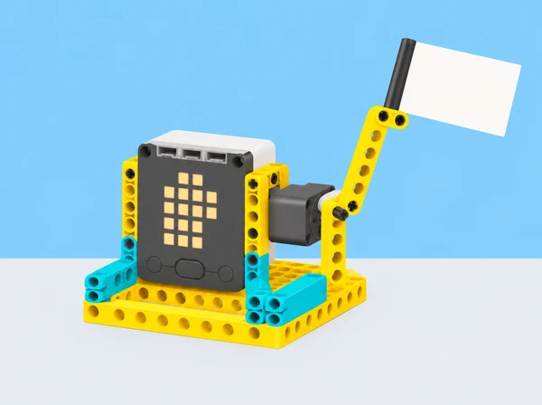

Una benvinguda amb moviment
🏷️ Acollida i convivència
🌱 Situació, repte i intenció
El repte combina expressió visual, moviment i programació. La pregunta central és com les decisions sobre la forma, l’amplitud i el ritme canvien la lectura del gest. Partim d’un espai pròxim —la biblioteca escolar— i pensem també com es podria rebre un grup visitant d’un altre centre de la localitat. No gravem ni identifiquem visitants: les proves es fan amb targetes o amb persones voluntàries que poden observar des de la distància i retirar-se quan vulguen.
🎯 Aprenentatges i vocabulari
- Generar diverses idees de gest i justificar quina comunica millor l’acollida.
- Construir un braç o bandera articulada i relacionar la posició del motor amb el moviment observat.
- Comparar control per temps i control per rotacions amb repeticions mesurables.
- Programar una entrada i una resposta amb una aturada clara i una posició de repòs segura.
- Recollir feedback sense jutjar l’expressió personal de qui participa, i modificar el prototip a partir d’evidències.
Abans del muntatge, cada equip defineix com comprovarà aquests criteris: el gest es reconeix a distància; el moviment no resulta brusc ni envaeix l’espai personal; torna de manera repetible a una posició segura; i hi ha una alternativa si no es vol activar el sensor o participar en la prova.
🧰 Materials i preparació
Set LEGO Education SPIKE Prime 45678 per parella o equip, hub carregat, un motor, peces estructurals, cartó lleuger per a bandera o mà, paper quadriculat, retoladors, regle i targetes de feedback. Sensor de distància opcional, només si forma part de la dotació i funciona en la versió local de l’app; si no, el botó del hub és suficient. No cal una expansió ni cap objecte addicional que interactue amb el cos.
Abans de la classe, proveu el port i l’orientació del motor, prepareu una base estable i marqueu una zona de moviment segura. Deixeu targetes de gest disponibles per a anticipar la seqüència i un mode manual perquè el prototip no depenga del sensor. Roten els rols de disseny, muntatge, programació, registre i observació; cada alumne pot aportar una prova encara que no vulga activar ni veure el gest en directe.
📅 Seqüència didàctica
Què fa que una benvinguda siga llegible
Fase 1 · Activem i prediem
Observeu tres targetes amb gestos dibuixats —braç que saluda, bandera que s’alça i inclinació breu— i descriviu què veieu sense endevinar intencions. Predigueu quin es reconeixerà millor des de la distància.
Fase 2 · Explorem i construïm
En grups, esbosseu tres propostes i anoteu per a cadascuna què es mou, qui inicia el moviment, des de quina distància es veu i com acaba. Compareu una forma amable i recognoscible amb una de més abstracta.
Fase 3 · Expliquem i registrem
Trieu un gest que es puga representar amb un motor i una peça lleugera. Marqueu base, eix, part mòbil i recorregut màxim. Anoteu qui inicia el moviment i com arriba a la posició segura de repòs.
Fase 4 · Apliquem i millorem
Reviseu el disseny amb criteris d’accessibilitat: el senyal ha de ser visible sense so i una targeta fixa de benvinguda ha de continuar disponible. No cal afegir una cara o ulls perquè el moviment comunique.
Fase 5 · Comprovem i reflexionem
Expliqueu per què heu seleccionat el gest i com es pot entendre a distància.
Del gir del motor al gest
Fase 1 · Activem i prediem
Trieu una bandera o braç articulat i dibuixeu l’eix de rotació. Predigueu quin recorregut farà la figura en moure’s.
Fase 2 · Explorem i construïm
Construïu una base ferma amb un motor SPIKE Prime i un braç o bandera de cartó lleuger subjecte amb peces del kit. Comenceu amb l’articulació més simple. Desplaceu el motor o canvieu la posició de l’eix per observar com varia l’arc; mesureu-ne l’amplitud aproximada en una graella.
Fase 3 · Expliquem i registrem
Compareu una extensió curta amb una de llarga i anoteu recorregut, oscil·lació de la base i estabilitat en començar i parar. Si feu una tisora amb peces en X, mesureu l’abast en repòs i desplegada.
Fase 4 · Apliquem i millorem
Afegiu una mà geomètrica o una peça terminal només si ajuda a llegir el gest i no fa el muntatge massa pesant. Reviseu l’estructura si és inestable; si cal, conserveu la tisora com a model de paper i feu el gest amb un braç directe.
Fase 5 · Comprovem i reflexionem
Expliqueu quina configuració és més visible i estable a partir de les proves.
Programem el ritme i la tornada
Fase 1 · Activem i prediem
Escriviu una seqüència: posició inicial, moviment fins a una amplitud acordada, pausa breu i retorn. Predigueu si l’element arribarà al punt previst i tornarà al repòs sense colpejar el suport.
Fase 2 · Explorem i construïm
Programeu-la amb blocs; si el grup té experiència, representeu-la també en Python. Creeu dues versions, una basada en temps i una altra en rotacions del motor, mantenint constants la forma i la velocitat.
Fase 3 · Expliquem i registrem
Executeu cada versió tres vegades i registreu si l’element arriba al punt previst i torna al repòs. Guardeu pseudocodi, captura o diagrama del programa.
Fase 4 · Apliquem i millorem
Si el braç no retorna o es mou massa, canvieu una sola cosa —rotació, duració o orientació inicial— i repetiu la prova. Eviteu accelerar el moviment com a primera solució.
Fase 5 · Comprovem i reflexionem
Compareu previsibilitat i repetibilitat entre temps i rotacions.
Decidim quan s’activa
Fase 1 · Activem i prediem
Predigueu en quines distàncies s’hauria d’activar el gest i quantes vegades hauria de respondre mentre l’objecte continua davant del sensor. No apunteu sensors a persones.
Fase 2 · Explorem i construïm
Useu una targeta gran o un objecte de cartó davant del sensor de distància SPIKE. Definiu una distància d’activació i una altra de separació i feu proves des de tres punts marcats. Si el sensor no forma part del set o no està disponible, useu el botó del hub o un inici manual.
Fase 3 · Expliquem i registrem
Anoteu les distàncies, resposta esperada i observada, i si el gest s’activa una vegada o repetidament. Registreu possibles errors: objecte massa menut, angle diferent, obstacle del fons o distància fora del rang provat.
Fase 4 · Apliquem i millorem
Ajusteu el llindar només després d’escriure què espereu que canvie. Compareu una entrada automatitzada amb una d’explícita; l’alternativa manual manté el control de la persona i és igualment vàlida.
Fase 5 · Comprovem i reflexionem
Expliqueu què pot i què no pot detectar el sistema.
Fem una prova d’ús i revisem
Fase 1 · Activem i prediem
Prepareu una demostració en taula estable. Una parella que no ha construït el model observarà el gest des d’un punt marcat i triarà una targeta de retorn: «he entés el senyal», «el moviment m’ha sorprés» o «preferisc el senyal estàtic».
Fase 2 · Explorem i construïm
Proveu el gest sense demanar si el robot sembla personalment acollidor i sense gravar la resposta. El grup constructor recull el retorn sobre el disseny i la llegibilitat.
Fase 3 · Expliquem i registrem
Anoteu què ha observat el públic i quina característica podria revisar-se: amplitud, posició del motor, durada o forma terminal.
Fase 4 · Apliquem i millorem
Canvieu una sola característica i torneu a provar el prototip. Prepareu un cartell amb el gest triat, resum del programa i una limitació.
Fase 5 · Comprovem i reflexionem
Compareu el muntatge directe amb el braç de tisora, si s’ha construït, i expliqueu quina versió és més estable i clara.
🧪 Evidències i avaluació
Recolliu esbossos i criteris, diagrama mecànic, codi o pseudocodi, comparació temps/rotacions, registre de proves del sensor (si s’usa), retorn d’ús i revisió final. La rúbrica formativa observa:
- Comunicació: explica quin gest vol representar i justifica forma i amplitud amb criteris observables.
- Mecànica: identifica eix i braç, compara dues configuracions i usa una mesura per descriure’n el canvi.
- Programació: implementa moviment, pausa i retorn, i depura el comportament modificant una variable cada vegada.
- Prova: repeteix les execucions en condicions semblants, documenta incidències i aplica feedback sense identificar participants.
- Inclusió i seguretat: conserva una alternativa estàtica/manual, delimita la zona i evita moviment cap a les persones.
Autoavaluació: «El gest es llig des de…», «he triat temps/rotacions perquè…» i «una alternativa que continua disponible és…». El feedback es refereix al disseny i a la llegibilitat, mai a la personalitat o a les emocions de qui observa.
♿ Participació, accessibilitat i seguretat
Oferiu instruccions escrites i visuals, demostració lenta i opció d’anticipar els moviments amb targetes. El missatge ha de combinar moviment amb un senyal estàtic visible; el so no és necessari. Les persones poden observar des de la distància que trien, participar a través del registre o no acostar-se al mecanisme. No useu el sensor per detectar o seguir visitants i no associeu cap moviment amb l’estat d’ànim de les persones.
Proveu el braç a baixa velocitat, sobre una superfície estable i sense ningú dins del seu recorregut. Atureu i desconnecteu el hub abans d’ajustar l’eix o retirar peces. El prototip no és un sistema de control d’accés ni un dispositiu per a espais públics; la recepció real continua sent responsabilitat de les persones del centre.
🔗 Referents i adaptació
Partim del SPIKE Activity Brief: Greetings, Earthling, elaborat amb el Tufts Center for Engineering Education and Outreach. El brief proposa saludar amb una salutació de mà, un puny o un xoc de mans; pensar com fer un aspecte amable, on situar el motor perquè el braç es moga amb naturalitat, i controlar la quantitat de moviment amb temps o rotacions. També suggereix afegir una mà, activar-se amb sensor ultrasònic i allargar el braç amb una tisora de peces en X.
Aquesta adaptació conserva eixos i extensions, però representa el gest a distància per no requerir contacte corporal. La narrativa de biblioteca, seqüència, proves, criteris i il·lustració són propis; el sensor s’assaaja només amb objectes.